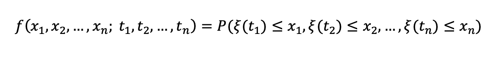
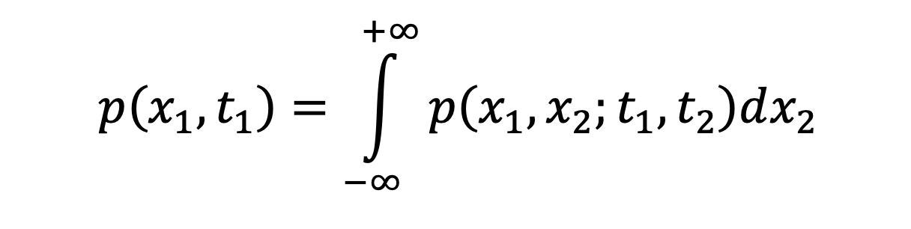
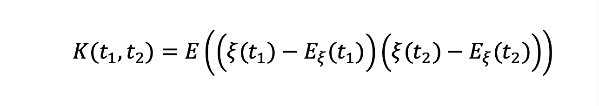
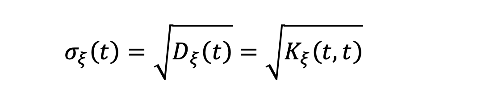
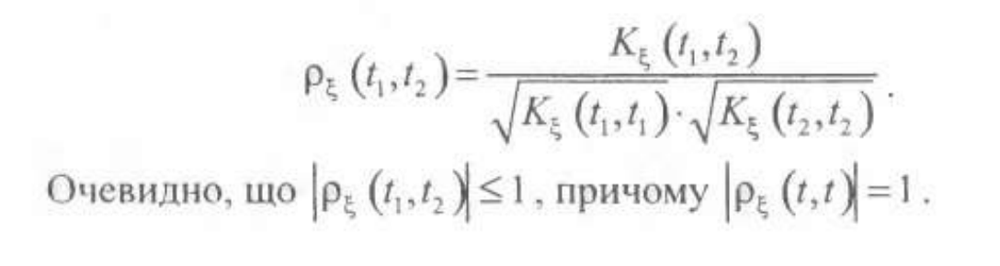
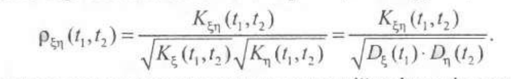

Питання 1-10
П1
Процес. Випадковий процес. Основні поняття теорії випадкових процесів.
⭐️ Процес – це зміна величин зі зміною часу або інших параметрів.
⭐️ Випадковий процес – це множина випадкових величин, як залежать від одного чи більше параметрів. Формально це випадкова змінна xi(t) яка змінюється залежно від невипадкового аргумента t є T, де t часто інтерпретують як час.
⭐️ Основні поняття: перетин, експеримент, реалізація. Перетин випадкового процесу xi – це його значення при фіксованому значенні t. Експеримент над ВП – це коли аргумент t послідовно набуває всіх значень зі своєї області визначення T. Якщо аргумент послідовно приймає всі значення з T, по всі відповідні вип. змінні теж приймають певні значення і це породжує реалізацію ВП – конкретну невипадкову функцію x(t).
П2
Класифікація ВП. Скінченновимірні розподіли ВП.
🍀 ВП можна поділити на 4 основні класи залежно від структури множини вип. змінних і множини значень аргумента t:
- з дискретними станами і дискретним часом
- з неперервними станами станами і дискретним часом
- з дискретними станами станами і неперервним часом
- з неперервними станами станами і неперервним часом
🍀 Дискретні стани, це коли множина станів системи, в якій відбувається ВП в будь-який момент часу зчисленна, а неперервні – коли незчисленна. ВП з дискретним часом якщо система може змінювати свої стани лише в моменти t_1, t_2, ..., t_n, або а з неперервним - якщо вона може змінювати свою стани в будь-який момент часу t.
🍰 Скінченновимірний розподіл ВП - це сумісний розподіл випадкових змінних xi(t_i). Ці змінні отримуються, якщо взяти деякі фіксовані значення t_i, i=1,...,n.
🍰 Розподіл показує ймовірність, що вип. величина прийме якесь значення, а сумісний розподіл – що кілька величин одночасно приймуть певні значення. Закон розподілу зазвичай залежить від часу, тому його можна задати густиною розподілу ймовірностей.
🍰 n-вимірний закон розподілу:

🍰 Як із двовимірної густини розподілу ймовірностей отримати одновимірну:

П3
Мат. сподівання та дисперсія ВП. Їх властивості.
🥝 Мат. сподівання ПВ xi(t) - це ф-я E_xi(t), яка при кожному t є T приймає значення мат. сподівання відповідного перетину цього процесу E(xi(t)). Вона є деякою середньою реалізацією даного процесу і на її графіку зображена сукупність центрів мас всіх можливих його перетинів.
🥝 Мат. сподівання ВП - невипадкова функція, яка повністю визначається одновимірни законом розподілу цього ВП. Якщо перетини ВП - дискретні вип. змінні, то залежно від того, чи залежать вип. змінні від часу чи ні, мат. сподівання можна подати відповідно як суму x_i(t) * p_i(t) або суму x_i * p_i(t), де x_i - i-й перетин.
🍁 Дисперсія ПВ xi(t) - це ф-я D_xi(t), яка при кожному t є T приймає значення дисперсії відповідного перетину цього процесу D(xi(t)). Вона характеризує ступінь розсіяння можливих реалізацій цього ВП навколо його мат. сподівання. Вона теж повністю визначається його одновимірним законом розподілу.
🍁 Дисперсія вимірюється в квадратних одиницях. Це часто не узгоджується з одиницями вимірювання перетинів процесу, тому за міру розсіяння ВП навколо його мат. сподівання часто беруть середнє квадратичне відхилення цієї ф-ї, яке обчислюється як корінь з дисперсії.
🍁 Властивості дисперсії ВП:
- це невідʼємнозначна функція
- дисперсія невипадкової функції = 0
- додавання невип. ф-ї до ВП не змінює дисперсії цього ВП
- якщо множником є невипадкова функція, то можна піднести її до квадрату і винести за знак дисперсії
- якщо при всіх значеннях t перетини двох ВП є незалежними вип. змінними, дисперсія суми цих процесів = сумі їх дисперсій
П4
Кореляційна функція ВП. Нормована КФ ВП. Взаємна КФ та нормована взаємна КФ двох ВП. Властивості.
🥑 Кореляційна функція випадкового процесу K(t_1, t_2) характеризує ступінь залежності між різними перетинами цього ВП, які відповідають різним значенням його аргументу t. Вона потрібна, бо мат. сподівання і дисперсія не визначають однозначно випадкову змінну, а ВП є сукупністю вип. змінних, що повʼязані спільним параметром.

🥑 Звичайна кореляційна функція ВП K(t_1, t_2) вимірюється в квадратних одиницях і залежить від масштабу чисел, тому за нею неможливо одразу сказати, сильний зв'язок між станами процесу чи слабкий. Нормована кореляційна функція rho_xi(t_1, t_2) потрібна для того, щоб перевести цей зв'язок в універсальну безрозмірну шкалу від -1 до 1. Вона показує "чистий" ступінь лінійної залежності між станами процесу в моменти t_1 і t_2.


🌈 Іноді кілька випадкових процесів можуть відбуватися одночасно і бути залежними один від одного. Тоді залежність цих ВП оцінюють на основі залежності їхніх перетинів і ступінь цієї залежності визначають за доп. взаємної пореляційної функції. Процеси незалежні, якщо ця функція рівна нулю, і залежні в іншому випадку. І вона теж вимірюється в квадратних одиницях, тому існує нормована взаємна кореляційна функція.
